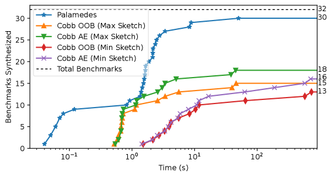

Implements Palamedes, an extensible Lean library that synthesizes constrained random test generators using Lean proof-search tactics.
Abstract
Among the biggest challenges in property-based testing (PBT) is the constrained random generation problem: given a predicate on program values, randomly sample from the set of all values satisfying that predicate, and only those values. Efficient solutions to this problem are critical, since the executable specifications used by PBT often have preconditions that input values must satisfy in order to be valid test cases, and satisfying values are often sparsely distributed. We propose a novel approach to this problem using ideas from deductive program synthesis. We present a set of synthesis rules, based on a denotational semantics of generators, that give rise to an automatic procedure for synthesizing correct generators. Our system handles recursive predicates by rewriting them as catamorphisms and then matching with appropriate anamorphisms; this is theoretically simpler than other approaches to synthesis for recursive functions, yet still extremely expressive. Our implementation, Palamedes, is an extensible library for the Lean theorem prover. The synthesis algorithm itself is built on standard proof-search tactics, reducing implementation burden and allowing the algorithm to benefit from further advances in Lean proof automation.
Problem
Property-based testing requires constrained random generators that sample only values satisfying a given predicate, but efficient synthesis of such generators remains a major challenge, especially for recursive predicates.
Approach
The authors propose a deductive program synthesis approach to constrained random generation. Synthesis rules based on a denotational semantics of generators give rise to an automatic procedure. Recursive predicates are handled by rewriting them as catamorphisms and matching with appropriate anamorphisms. The implementation, Palamedes, is an extensible library for the Lean theorem prover, where the synthesis algorithm is built on standard proof-search tactics.
Results
Palamedes synthesizes generators for 29 out of 32 main benchmarks. Compared to Cobb (a competing synthesizer), Palamedes synthesizes more generators overall and is faster on the 16 benchmarks both systems handle. Generated generators are qualitatively comparable to expert-written ones from the literature.

Figure 19 . Comparing Palamedes and Cobb. Left: Number of generators synthesized by Palamedes and Cobb (OOB = “Out of the Box”, AE = “Additional Engineering”). Right: Per-benchmark comparison for the 16 benchmarks synthesized with both sketches (above the line means Palamedes is faster). Time axes are logarithmic.